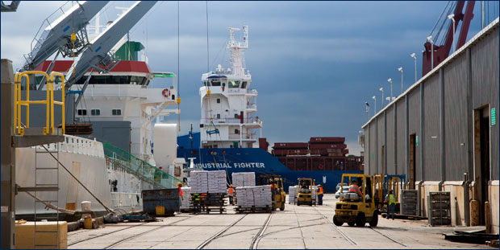

The Port of Pensacola

 |
|
cnnfoxnepbs. |
Freight mobility and intermodal logistics took center stage today at the state Capitol as lawmakers focused on the Florida Chamber Foundation’s Trade and Logistics 2.0 (TL 2.0) study, which identifies a potential 150,000 new trade and logistics jobs throughout the next five years. |
 |
|
Florida Chamber Policy Director Leticia Adams presented the Chamber Foundation’s Trade and Logistics study to members of the Florida Senate Transportation Committee. The Florida Senate Transportation Committee also discussed a bill which calls for establishing criteria for freight logistics zones in Florida. During testimony before committee members, Florida Chamber Policy Director Leticia Adams said Senate Bill 136 emphasizes the importance of freight mobility and intermodal logistics to Florida’s economic growth. “Freight zones are of paramount importance to Florida’s business community since they encourage regional partnerships across Florida to advance economic development, workforce, transportation and land use decisions that maximize the global opportunities for each region of the state,” Adams said. The hearing also included a presentation by the Florida Department of Transportation (FDOT) Assistant Secretary of Intermodal Systems Development, Rich Biter. Biter presented the Florida Freight Mobility and Trade Plan – a collaborative product of the Florida Chamber Foundation, FDOT, Enterprise Florida and Workforce Florida. “It’s our job to tell a freight story,” said Biter. “Florida citizens need to see a connection between freight, mobility and movement and how it relates to jobs.” FDOT also worked in conjunction with the Florida Chamber Foundation on the strategies and policies behind the Florida Chamber Foundation’s TL 2.0 study. The TL 2.0 outlines seven strategies that can be accomplished through a coordinated statewide action on workforce, transportation, economic development and business climate. |
 |
Copyright © 2012 SOS Pensacola. All rights reserved. Sponsored by Pensacola Propeller Club – Bay Area Port of Historic Pensacola
Sponsored by Pensacola Propeller Club – Bay Area Port of Historic Pensacola